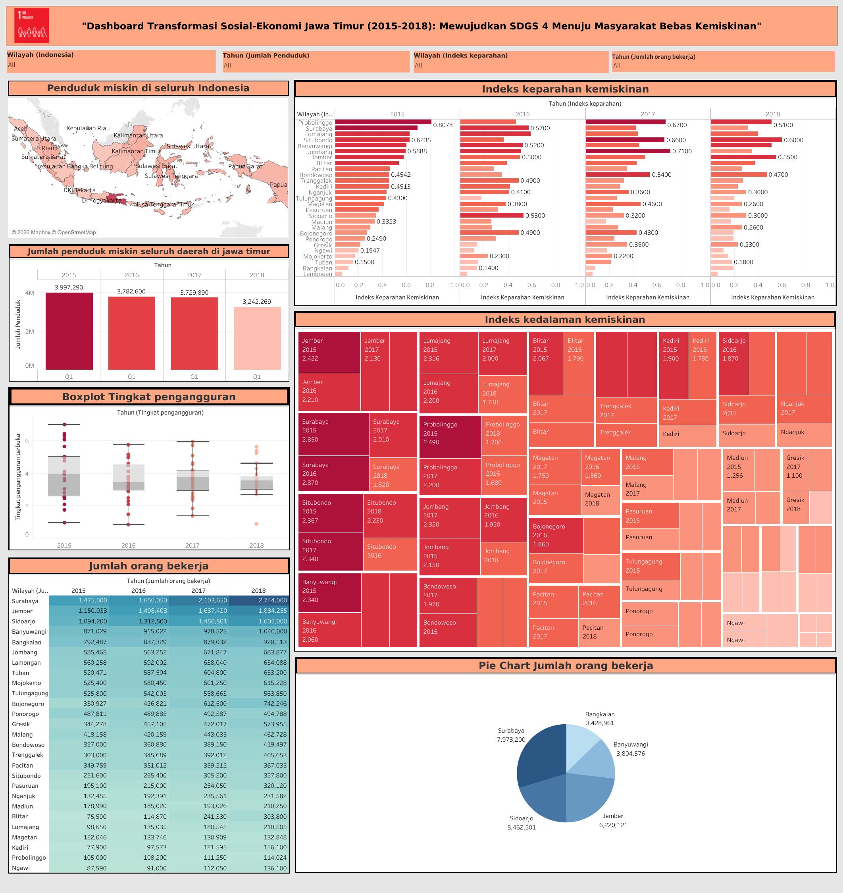

Analisis ini berfokus pada dinamika kemiskinan dan ketenagakerjaan di Jawa Timur periode 2015–2018 dengan tujuan mengidentifikasi pola, ketimpangan, serta faktor yang memengaruhi perubahan kondisi sosial ekonomi sebagai dasar pengambilan kebijakan berbasis data.

Data sosial ekonomi memiliki kompleksitas tinggi dengan berbagai indikator seperti jumlah penduduk miskin, tingkat pengangguran, dan tenaga kerja. Tanpa eksplorasi yang tepat, data tersebut sulit diinterpretasikan dan berisiko menghasilkan keputusan yang tidak tepat sasaran. Selain itu, ketimpangan antar wilayah menjadi tantangan utama dalam memahami kondisi sebenarnya di lapangan.
Mengidentifikasi tren kemiskinan dan ketenagakerjaan di Jawa Timur selama periode 2015–2018 serta menganalisis faktor-faktor yang berkontribusi terhadap penurunan maupun ketimpangan yang terjadi, sehingga dapat memberikan insight yang relevan untuk mendukung perencanaan kebijakan publik.
Analisis menunjukkan bahwa jumlah penduduk miskin di Jawa Timur mengalami penurunan signifikan dari 14.32 juta jiwa (2015) menjadi 12.33 juta jiwa (2018). Penurunan ini dipengaruhi oleh pertumbuhan ekonomi, peningkatan investasi, serta berbagai program pengentasan kemiskinan dari pemerintah.
Namun demikian, penurunan ini tidak terjadi secara merata di seluruh wilayah. Ketimpangan antar daerah masih terlihat jelas, yang menunjukkan bahwa pertumbuhan ekonomi belum sepenuhnya inklusif.
Selain itu, Kota Pacitan menunjukkan performa yang menarik dengan tingkat pengangguran terbuka terendah (~4.86%). Hal ini mengindikasikan adanya faktor lokal seperti sektor pariwisata, akses pendidikan, dan program pemberdayaan masyarakat yang berkontribusi terhadap kondisi tersebut.
Dashboard interaktif yang dikembangkan mampu menyajikan data kompleks menjadi insight yang mudah dipahami, sehingga membantu proses pengambilan keputusan berbasis data. Hasil analisis ini dapat digunakan sebagai dasar dalam merancang kebijakan pengentasan kemiskinan yang lebih terarah dan efektif.